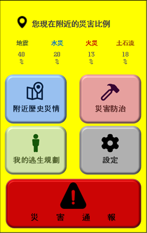
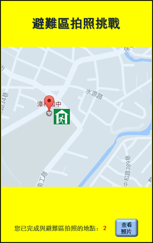
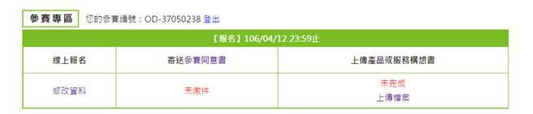

Open Data創新應用競賽
產品或服務構想書(一般民眾/新創企業)
|
參賽編號 |
OD-37050238 |
|
產品或服務名稱 |
My防災 |
壹、 產品簡介
總覺得「防災」離我們的生活又近又遠？不準備就不踏實，真要準備起來又沒頭緒？沒關係！我們幫你！
Ｍy 防災除了知道你家附近曾經發生過甚麼災害外，還能夠告訴你要怎麼防範，除此之外藉由遊戲機制，讓使用者在遊玩的情境下能了解附近的避難路線，達到寓教於樂的效果，並能俗話說的好「預防重於搶救」，萬一再次發生，再也不用手足無措！同時掌握第一手災害警示，讓你有最黃金的時間可以做足準備。
貳、 資料來源
|
資料集提供機關名稱 |
資料集名稱 |
資料集網址 |
|
避難收容處所開設情形 |
||
|
桃園市政府社會局 |
桃園市避難收容所 |
http://data.gov.tw/node/32259 |
|
新北市政府社會局 |
新北市臨時防災收容所一覽表 |
http://data.gov.tw/node/26662 |
|
臺中市政府社會局 |
臺中市災民避難收容處所 |
http://data.gov.tw/node/29443 |
|
新竹市政府 |
新竹市避難收容場所數及人數 |
http://data.gov.tw/node/35829 |
|
消防署 |
災情案件資料 |
http://data.gov.tw/node/12851 |
|
消防署 |
火災事件資料 |
http://data.gov.tw/node/13764 |
|
災民避難收容所 |
高雄市政府 |
http://data.gov.tw/node/43833 |
|
重大土石災情報告 |
行政院農業委員會 |
http://data.gov.tw/node/9537 |
|
臺中市火災資料統計 |
http://data.gov.tw/node/29710 |
|
|
交通部公路總局 |
道路(橋梁)歷史災情 |
http://data.gov.tw/node/31020 |
|
行政院環境保護署 |
經確認後土石流災情 |
http://data.gov.tw/node/35055 |
|
行政院環境保護署 |
重大土石災情報告 |
http://data.gov.tw/node/35597 |
|
桃園市政府消防局 |
桃園市災害通報一覽表 |
http://data.gov.tw/node/31241 |
|
土石流疏散避難圖 |
http://data.gov.tw/node/7282 |
參、 產品說明
一、 緣起與創作目的
資訊技術普及化的現代，軟體服務的範疇越來越廣大，然而，接近萬能並且極度便利的現代化世紀中，卻帶給人們「怠惰的心態」，認為大部分的是都能夠透過科技的力量解決，尤其是以台灣為例，雖然現今已有許多完善的地震提醒機制，讓我們對於預測型的科技更加依賴，但是，當我們反思災害發生後該如何避難的步驟時，我們往往毫無頭緒，然而「防災」一詞，竟逐漸變成政府的責任，但是「防災人人有責」才是正確觀念。故希望能夠將「災害防治、你我有責」及「預防重於搶救」的觀念深植民心。
二、 市場調查與產品或服務定位
市場調查：地震防災救援APP
產品功能及比較
|
|
地震防災救援 |
My防災 |
|
災害警示 |
有 |
有 |
|
通報系統 |
有 |
有 |
|
災害紀錄 |
有, 但無分類 |
有 |
|
防災知識 |
無 |
有 |
|
所在地風險分析 |
無 |
有 |
|
逃難措施設定 |
有, 只有集合地點 |
有 |
產品定位
1. 傳達「正確」的防災觀念
n 現今媒體越來越多，資訊傳遞越來越快速，然而「正確性」卻漸漸下降，不論是常見的假新聞或是各種無根據的偏方都越來越氾濫。
2. 客製化避難的行程，不再只有官方解答
n 官方宣導針對的目標都是「大眾」，然而每個人所考慮的因素各不相同，但是政府不可能配合每個民眾去調整，在新聞上也時常看到老人家即便大地震也不願意離開家裡，這時最適合他的應該是正確的避難地點以及姿勢，而不是逃難路線及避難所。
3. 客製化避難的行程，不再只有官方解答
n 以遊戲方式促進民眾對於避難相關知識更加敏銳，了解到臺灣各地的避難所所在位置外，亦可促進民眾走出室外增進人與人的互動性。
三、 使用對象
這款服務適合全國大小民眾，讓每個人都可以找到最相關，最適合的防災資訊。
四、 產品或服務特色說明
本產品強調「個人化」之特性，其特點如下：
1. 依照使用者所在地區分析歷史災害紀錄，並呈現給使用者。透過此功能可以帶給使用者貼近感，營造出量身打造的使用體驗。
2. 依照風險大小去調整防災知識的比例，並強調「預防重於搶救」的觀念給使用者，同時透過遊戲等方式提高使用者吸收的意願。
3. 及時的災害警示功能，讓使用者掌握最新的災害情報。
4. 使用者可以依照自己住家附近的情況去調整避難措施，如：防火巷推滿垃圾不堪使用、巷弄車輛停放造成道路縮減等變因。
五、 產品或服務功能
1. 所在地區災害風險分析-我會遇到甚麼災害？
n 透過分析歷史災害紀錄以及氣候變化，並且依據使用者所在的地區去 告知該地區可能之災害風險係數。
2. 動態防災知識推播-若是遇到了，我該怎麼辦？
n 依據上述所分析出的災害提供相關的防災知識，培養防災觀念，落實「預防」重於搶救的原則。
3. 及時災害警示-真的發生了，會不會來不及？
n 在實際災害發生時可以得第一手的資訊並做出迅速、正確的避難措施。
4. 客製化個人避難流程-我有妻小、PS4要照顧，沒有他們我活不下去!
n 可以依照自己的需求調整避難措施的行程，如：逃生路線規劃、重要物品清單、聯絡緊急聯絡人、通報政府機關等。
六、 未來規劃
n 增加多種災害資料來源與種類，如：社群網站、警廣、新聞等來源，蒐集天災人禍等各種資訊並分析，建立更精確的災害風險評估。
n 加入更多元的宣導素材，目前來源僅限消防署及一部分網路資料，但若由網路資料取材會有不正確的疑慮產生，故必須仰賴政府的認證始能得到民眾的信賴，且希望能夠將素材整理成開放資料格式，帶動各式應用。
n 整合民生經濟，如災害的發生與菜、房價的變化。
雛型設計圖

Figure 1 產品主畫面

Figure 2 功能主畫面

Figure 3 個人避難路線規劃

Figure 4 避難場所拍照小遊戲

Figure 5 報名頁面
ＵＩ、ＰＭ：陳宇凡
工程師：羅仕宏
資料庫工程師：王彥文